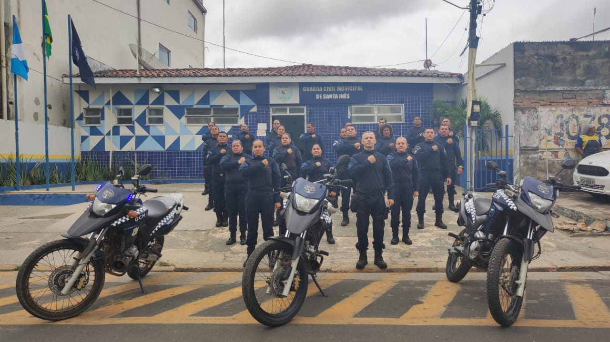

Apoiando Eventos
O apoio a eventos pela Guarda Municipal inclui segurança e controle de acesso, patrulhamento e vigilância, coordenação do trânsito, resposta a emergências e apoio logístico. O objetivo é garantir a segurança e a ordem durante o evento, promovendo um ambiente seguro e bem-organizado para todos os participantes.